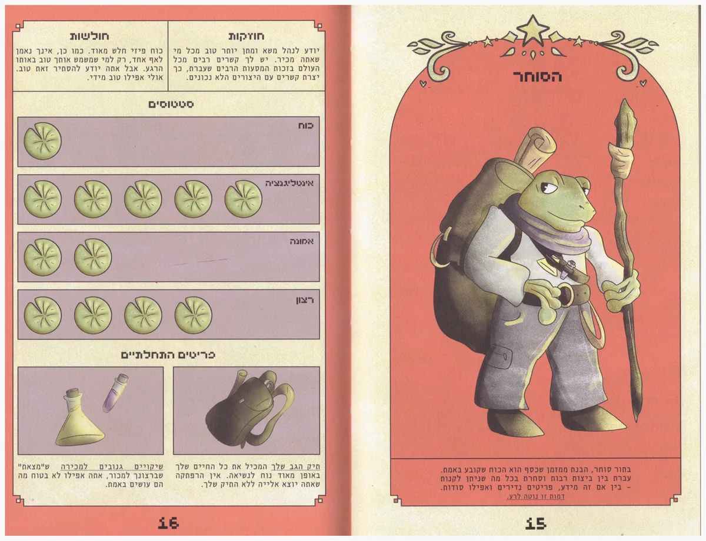
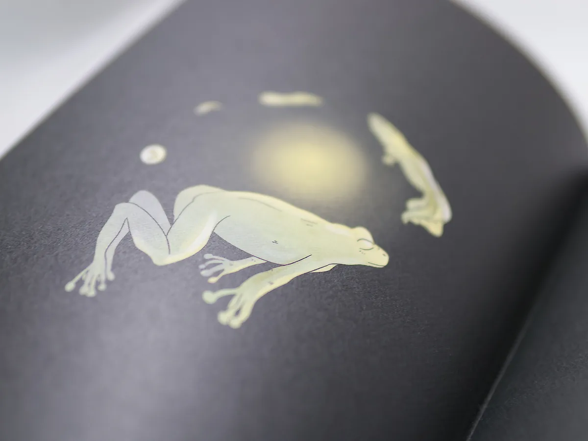
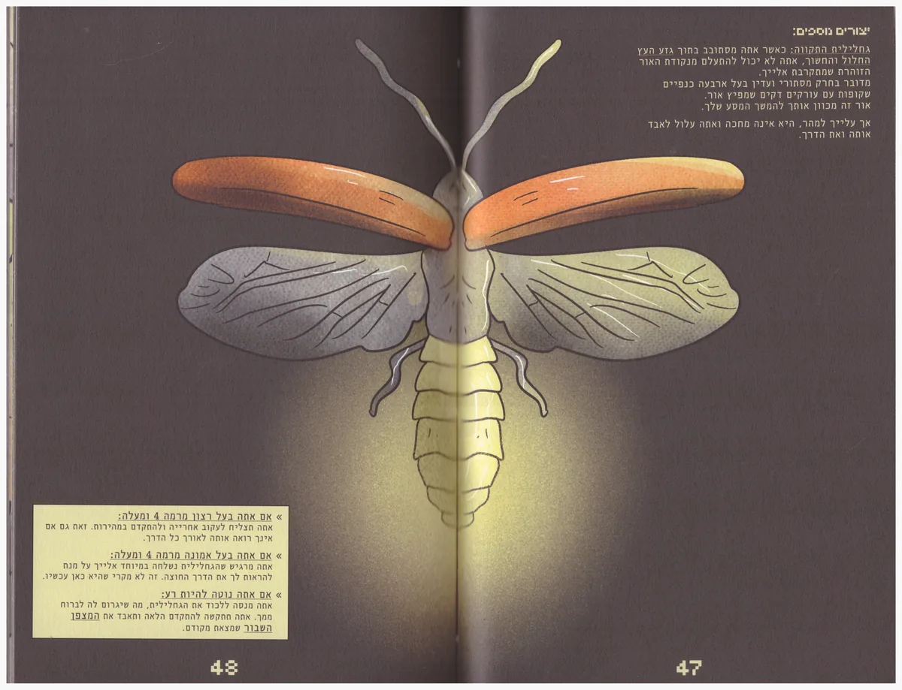
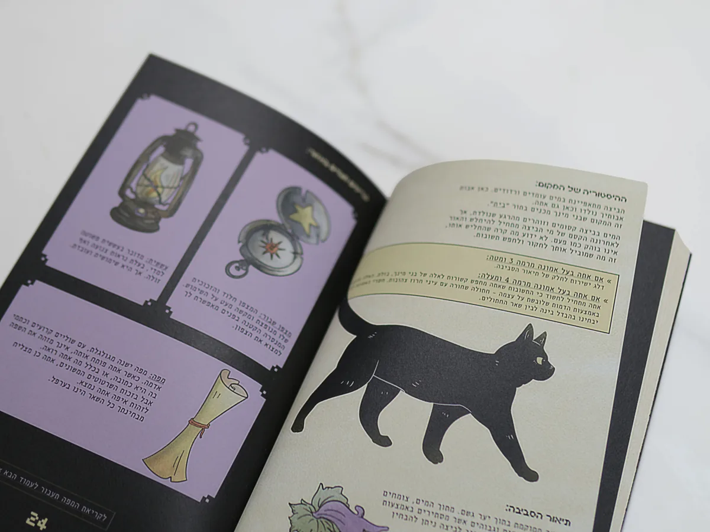
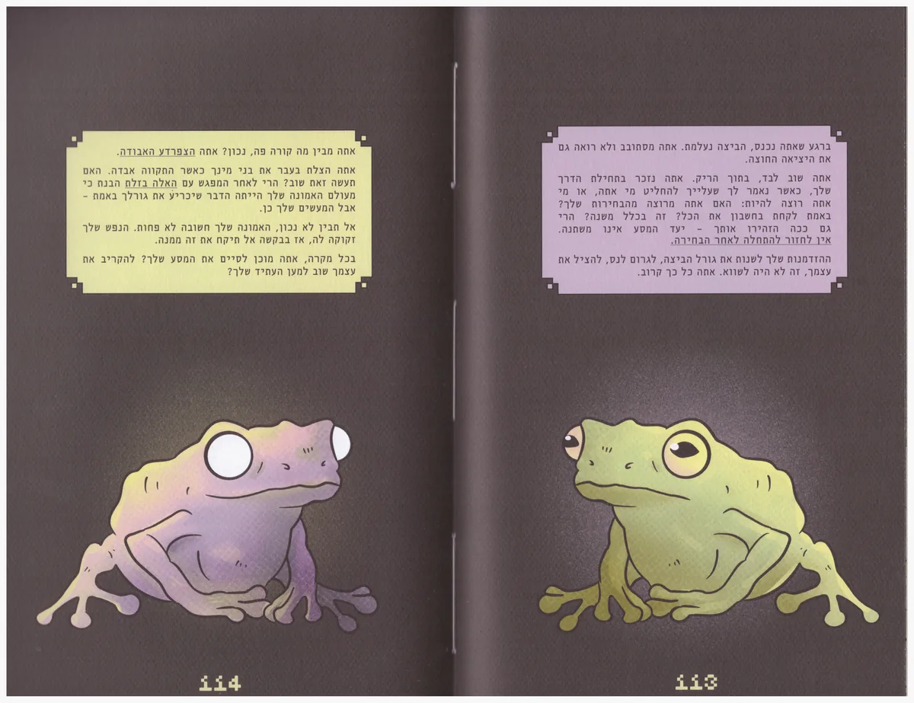

דו-חיים:
מדריך למשחק שלא קיים
נקודת המוצא
הפרויקט נעשה במטרה להעביר חוויה אינטראקטיבית של משחק מחשב אל הדף המודפס, מבלי שיהיה מדובר במשחק אמיתי. הפרויקט נעשה בהשראת משחקי תפקידים מעולם הפנטזיה, משחקי מחשב וסדרת הספרים "Vermis", שמציגה מדריכים למשחקים דמיוניים.
הרעיון
כתבתי, איירתי ועיצבתי ספר שהוא מדריך למשחק שלא קיים. בתחילת הספר הקורא בוחר דמות בהתאם לסטטוסים שלה, וכך הוא חווה את הסיפור בצורה שונה ומנווט בין העמודים לגלות דברים חדשים על ההרפתקה שיצא אליה. כל אלמנט בספר נבנה כדי שהדף ירגיש כמו חלק ממשחק: הדמויות, החפצים, האזורים השונים במפה בהשראת ממשקים של משחקי מחשב.
תוצרים
- ספר מודפס בכריכה רכה
- יצירת התוכן, מכתיבתו עד העיצוב והאיור
- עיצוב דמויות, רקעים וחפצים
- צילומי תדמית
- עימוד ומערכת טיפוגרפית






